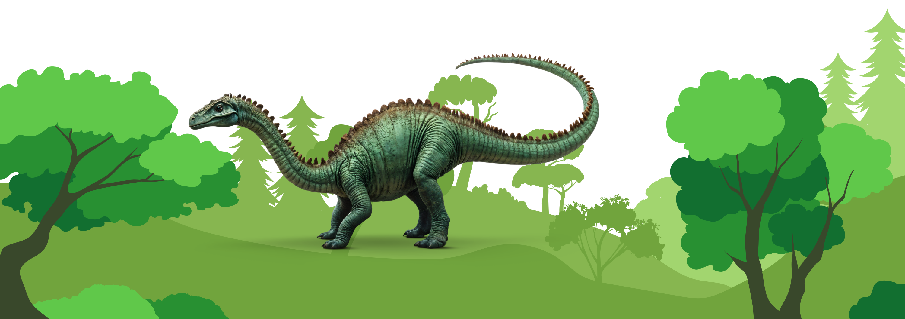

The United States is one of the richest countries in the world for dinosaur fossil discoveries. From the Badlands of Montana to the deserts of Utah and New Mexico, American soil has yielded some of the most iconic skeletons in paleontology. Estimating how many complete or nearly complete dinosaur skeletons exist in the country, however, is not straightforward. It requires looking at fossil records, museum collections, and excavation data.
Paleontologists have been excavating dinosaur fossils in the U.S. since the mid-1800s, particularly during the famous “Bone Wars.” Today, American museums such as the Smithsonian National Museum of Natural History, the American Museum of Natural History, and the Field Museum of Chicago each house dozens of skeletons, either original fossils or reconstructions made from casts.
According to available research, there are several thousand dinosaur fossil specimens in U.S. collections, but only a fraction of these are full or nearly complete skeletons. Most discoveries consist of partial remains, such as skulls, vertebrae, or limb bones. Based on museum inventories and published fossil records, paleontologists estimate that the United States holds between 500 and 1,000 reasonably complete dinosaur skeletons, either on display or preserved in collections.
While the exact number cannot be pinpointed, the United States almost certainly contains hundreds of complete or nearly complete dinosaur skeletons, making it one of the world’s leading regions for fossil discoveries. This estimate is grounded in the history of excavations, the size of museum collections, and the fossil-rich geology of the American West.
